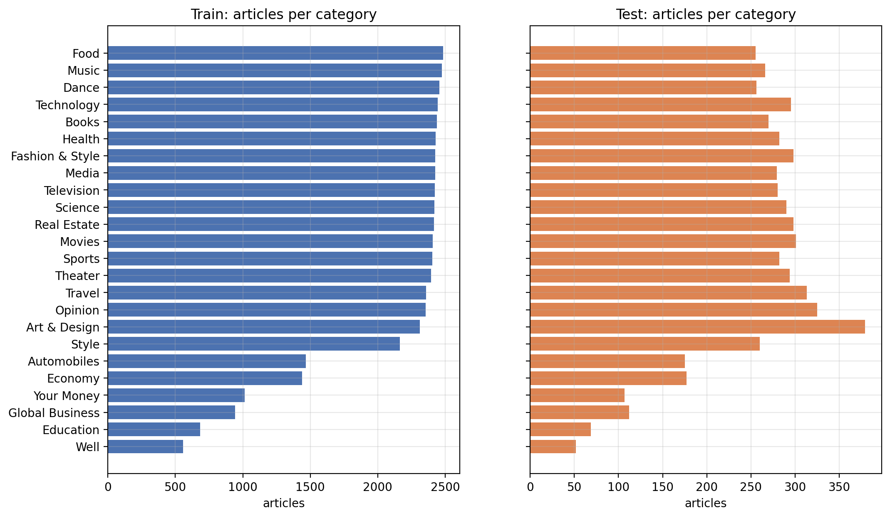
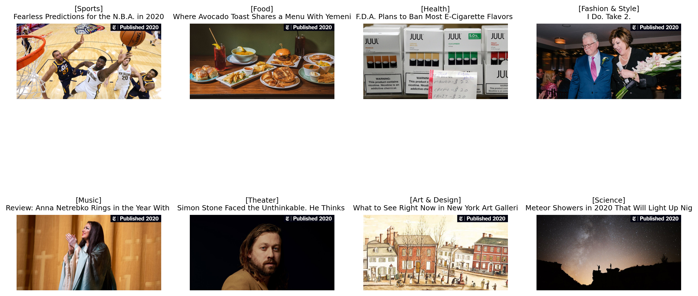

Multimodal Task & Validity Constraints (A3-M1)
- Every sample must contain at least two modalities linked by the same entity, event, scene, or timestamp.
- Data from two independent datasets must never be paired randomly.
- Leakage prevention: Split by entity/event/scene (if an entity has multiple records, all must remain in the same split).
Dataset Proposal Record (A3-M1)
| Proposal document | dataproposal-a3.pdf |
| Milestone | M1 Proposal · due 18 Nov 2026, 23:59 GMT+7 · 15% of Assignment 3 |
| Approval status | Pending Approval |
| EDA notebook | notebook/01_eda_n24news.ipynb |
Selected Multimodal Task Specification
| Component | Description / Choice |
|---|---|
| Selected Task Option | Image–Text Classification: single-label, 24 news categories |
| Dataset | N24News (Wang et al., LREC 2022): New York Times articles, 2010–2020 · GitHub · paper |
| Modality A (Text) | Headline + abstract as a RoBERTa sentence pair (max length 128 tokens) |
| Modality B (Image) | Main article image, resized and center-cropped to 224×224 (ViT-B/16 or CLIP image encoder) |
| Pair Validity | Image and text come from the same article; 0 missing or corrupt images, 0 empty headlines/abstracts |
| Paired Sample Count | 61,235 valid pairs (meets the Section 28.2 threshold of ≥5 classes and ~5,000 pairs) |
| Split & Leakage Unit | Stratified 80/10/10 by duplicate group (shared image or headline), seed 42: 49,340 / 5,980 / 5,915 |
| Metrics | Macro-F1 (primary), accuracy, per-class F1, confusion matrix; mean ± std over 3 seeds |
Preliminary EDA
Valid image–text pairs
61,235
Classes / imbalance ratio
24 / 4.41
Median words (headline + abstract)
30
Articles in duplicate groups
3,674 (6.0%)
17 categories are capped at 3,001 articles, while seven are smaller (down to 681 for Well), so macro-F1 is the main metric. Recurring columns and reused photos create duplicate groups: under a random split, 5.98% of test articles would have a duplicate in training, and the authors' official split is barely better (5.47% of test, 5.83% of dev). Groups are therefore kept within a single split.


Encoders, Data Alignment & Fusion Strategies
Raw Paired Data → Preprocessing → DataLoader → Modality Encoders → Fusion Stage → Loss → Optimization → Prediction → Evaluation
Fusion Stage & Operation Options
Concatenation or joint projection of raw/low-level features prior to main representation encoding.
Cross-attention, bilinear pooling, or element-wise fusion at intermediate feature layers.
Weighted ensemble or decision-level combination of unimodal output logit vectors.
Unimodal vs. Multimodal Comparison Matrix
| Model Configuration | Modalities Used | Macro-F1 (primary) | Accuracy | Parameters |
|---|---|---|---|---|
| 1. Unimodal Baseline A | Text only (RoBERTa-base) | -- | -- | -- |
| 2. Unimodal Baseline B | Image only (ViT-B/16 / CLIP) | -- | -- | -- |
| 3. Simple Fusion Baseline | Modality A + B (Concat) | -- | -- | -- |
| 4. Improved Multimodal Model | Modality A + B (Cross-Attention + Gated Fusion) | -- | -- | -- |
Modality Interaction & Ablation Analysis
Samples where combining both modalities corrects single-modality errors (e.g. ambiguous image clarified by text caption).
Samples where noisy or misleading information in one modality degrades multimodal accuracy below unimodal performance.
Presentation Video & Deliverables
CO3133-Semester-261 - Group G-10 - Assignment 3
YouTube Video Embed Placeholder (Assignment 3)
Assignment 3 AI Disclosure
AI usage logs for Assignment 3 according to Section 5 of the handbook.